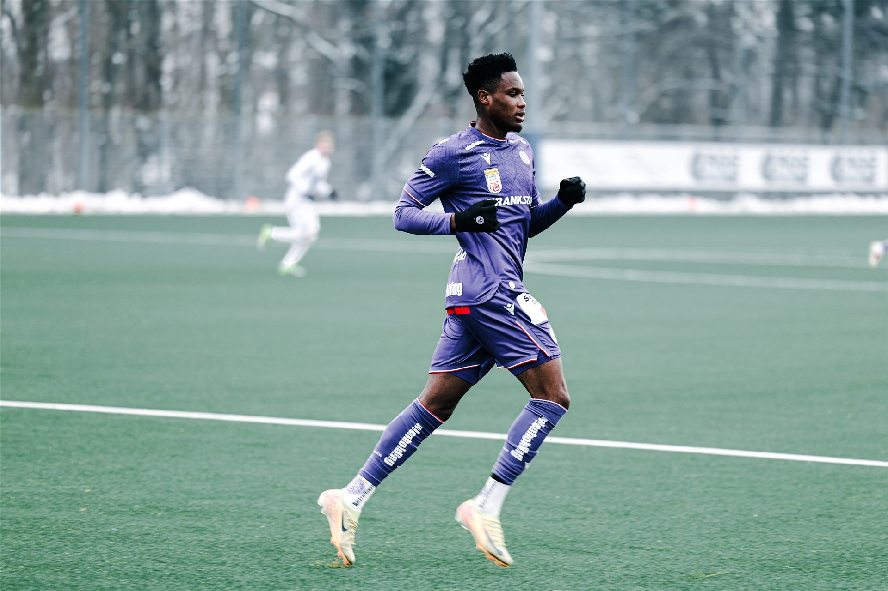
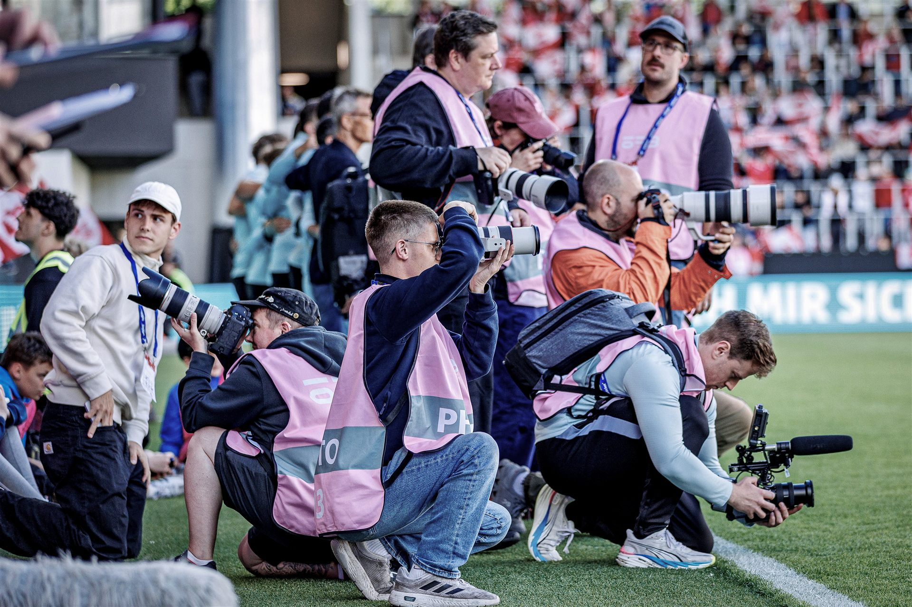

20. April 2026
Politik · Christian Stocker bei PolEdu
Schreib hier ein paar Sätze über diese Veranstaltung.
Alle Fotos ansehen →


Samuel Jamöck
Eine kleine Auswahl
Was ich zuletzt fotografiert habe
Schreib hier ein paar Sätze über diese Veranstaltung.
Alle Fotos ansehen →
Schreib hier ein paar Sätze über diese Veranstaltung.
Alle Fotos ansehen →
Wiener Sport-Club Platz. Schreib hier ein paar Sätze über dieses Spiel.
Alle Fotos ansehen →Alle Sessions im Überblick




Hey, mein Name ist Samuel und ich fotografiere hobbymäßig bei Sport- und Politikveranstaltungen. Für weitere Einblicke lohnt sich ein Blick auf meinen Instagram-Account
Schreib mir auf Instagram